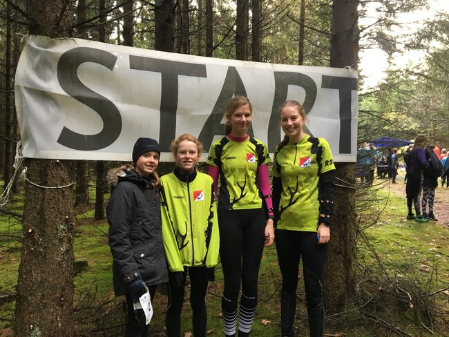
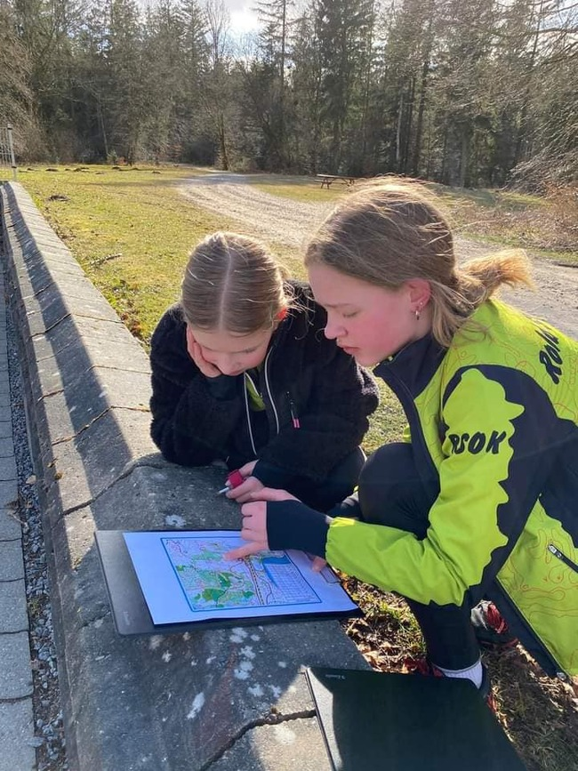
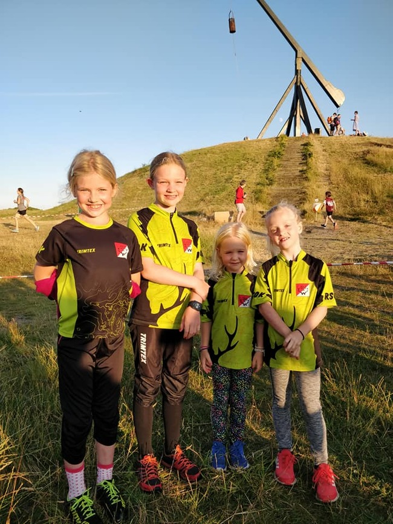

Træningsløb for alle aldre og niveauer
RSOK laver hver lørdag - næsten da, for selvfølgelig er der lidt pause
i sommerferie og henover jul og nytår - et såkaldt træningsløb.
Konceptet er enkelt og nemt.
Man mødes forskellige stederfra gang til
gang, så man ikke løber i det samme skovområde hver lørdag - se
kalender og startsteder på websitet - med start mellem klokken 13 og
13:30.
Der er typisk 4-5 forskellige baner i forskellig længde og
sværhedsgrad, og der er altid folk tilstede, som kan og gerne vil
hjælpe og vejlede, hvis du eller I er nye i sporten eller blot har
lyst til at prøve en tur i skoven med mål og mening.
Senere, når
deltagerne er kommet tilbage, går snakken ivrigt med ligesindede og
gode venner i RSOK

Tid og sted for træninger
Træning for børn og unge hver tirsdag kl 16:45 Vi mødes kl. 16:45.
Træningen består af opvarming i form af en leg, og noget socialt.
Derefter er der baner på forskellige niveauer, og nogle gange trænes
der bestemte øvelser. Efter endt træning er der fællesspisning for
hele familien. Mens børnene og de unge træner, er det en ideel
mulighed for forældrene at træne eller gå en tur i det smukke område.

Er det svært?
Orienteringsløb er opdelt i sværhedsgrader og længder, afpasset
efter hvor øvet man er, ens køn og alder. Man kan altså vælge sit
"niveau" og gradvis skærpe kravene til sig selv.
Mødersteder
Kontakt et bestyrelsesmedlem eller se kalenderen for tidspunkt og
mødested.

Hvad kræver det af udstyr?
Orienteringsløb kræver ikke meget udstyr for at komme i gang. Selvom
der findes specialdesignet løbetøj og udstyr som kompas og sko,
anbefaler vi, at du i starten bruger det løbetøj og de løbesko, du
allerede har, samt eventuelt joggingtøj, du føler dig komfortabel i.
Det vigtigste er, at du har tøj på, der giver dig fri bevægelighed og
passer til vejret. Derudover vil du have brug for et kort over området
og et kompas, som er de primære værktøjer til at navigere. Begge dele
kan du låne af klubben, så du kan starte uden at investere i udstyr
med det samme.
Når du har det rette tøj og udstyr, er du klar til at
tage de første skridt ind i orienteringsløbets verden